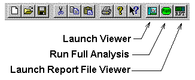
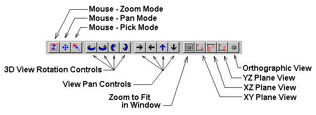

Step 2 - The Data Viewer
Most of the work is done in the data viewer. From this window you can review graphically the input model as well as analysis results. BRIDG uses our “Data Driven Data” system, which has the program work only as much as necessary to display the requested plot. For example, a request for plotting section shapes will take very little time and result in an almost instantaneous plot. Another request for dead load moments will cause the program to initiate the dead load analyzer and then plot the data. All subsequent dead load plots will be quickly displayed because more work is not required since all dead loads are done at one time. Live load plots will cause yet another delay as would capacity and rating plots. This method is optimal for model checking and progressing through to the final results of capacities and ratings.
To start the viewer, select the third icon from the right on the main window tool bar. This icon looks like a graph and is next to the one with the letters RUN. The RUN icon will cause the program to solve for all forces, member capacities and ratings. Use the RUN button it you do not want to step through the process using the viewer. You can have more then one viewer operating at one time. To start another viewer, make the editor window the current one, and then select the viewer icon again.
The viewer window operates very similar to the editor window. Depending on the type of data being displayed, you will see either a 3D image or a 2D graph. What is graphed is selected by the “View Mode Explorer” that is in the left side panel. The top right pane is the graphics area, and the bottom right pane is a dialog with any optional switches and controls.
The viewer has the controls shown in the graphic above. Not all of these controls are available in every view, and some might be “grayed out” or not visable.
Mouse - Zoom Mode: Select this button to put the viewer into mouse zoom mode. You can then zoom up on an area of the plot by holding down the left mouse button and scribing a zoom area rectangle. Also, a double click on the left mouse button will cause the window to zoom in about the center of the view. A double click on the right mouse button will cause the window to zoom out.
Mouse - Pan Mode: In this mode use the mouse to pan the view. While holding down the left mouse button, move the mouse, and the view will track accordingly.
Mouse - Pick Mode: Some views allow you to select object for information or manipulation. Select this button to place the view in object pick mode.
Some graphs, such as Results, allow you to select a member to launch a detail graph about that member. Other graphs do not have that feature active yet, so nothing will happen.
3D View Rotation Controls: These controls will rotate the model in the 3D view about the view’s X and Z axis.
View Pan Controls: These controls will pan the view in the directions indicated.
Zoom to Fit in Window: This will zoom the view so that the entire plot is visable.
For now, please do the following:
Explore the COGO view and practice with the view controls. The program will compute the COGO coordinates and “connect the dots” to give a preliminary display of the bridge members.
Now select View FEM. This will cause the program to generate the actual member properties, deck mesh, and finite element model.
Next, open the Results folder and select the Full Model View . This will launch the finite element analyzer.
View the displaced plot and explore the member graphics by selecting a member from the Member Actions folder. The member selector works from within the 3D results view but multiple member action views is not working so close the current one before launching another.